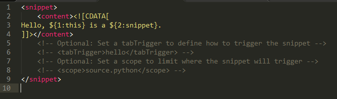
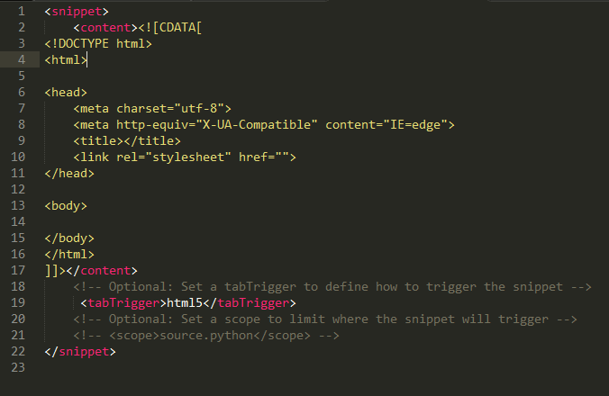
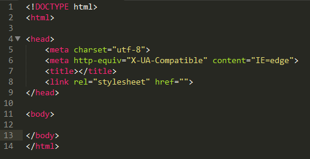

写一个html的基本结构可通过创建一个html5的代码片段来完成，步骤如下：
在菜单栏上点击“工具”->"新的代码段"，然后会新建一个html文件页面，如图：
content 里面就是代码模版：${序号：默认值} ，序号相同的地方光标会同时停在那可以多处同时编辑。序号大小就是tabindex。在实际使用代码的时候，可以使用tab切换光标位置。 tabTrigger是指输入该字符串后tab就是在光标插入content中的内容。scope是指在何种文件类型中使用。 下面是html5代码片段的定义，如图：
然后保存为C:\Users\[用户]\AppData\Roaming\Sublime Text 2\Packages\User\html5.sublime-snippet默认的保存路径即可
保存完重启Sublime text ，新建文件：输入html5,按tab就会出现如下效果：
